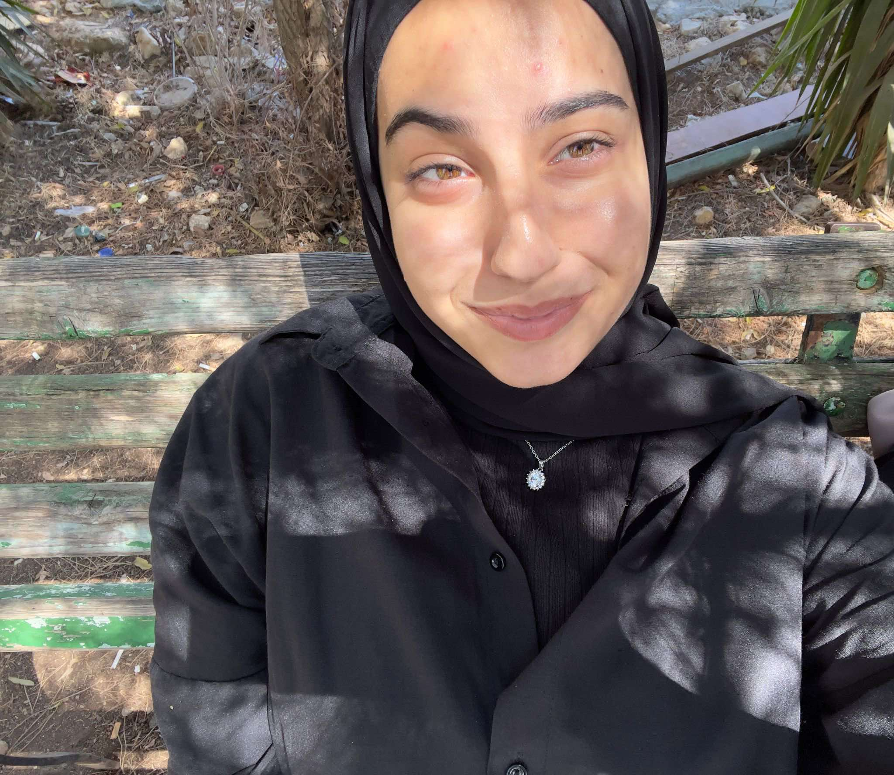

I am Noor Shawamreh, a Computer Engineering student at Birzeit University, and I have completed my first year in the major (Class of 123). I have a strong interest in programming, which is why I chose this major. The HTML and CSS course was one of the first courses I wanted to take because of its simplicity and importance, and I was fortunate to have the opportunity to do so. I would like to thank those who organized it.
